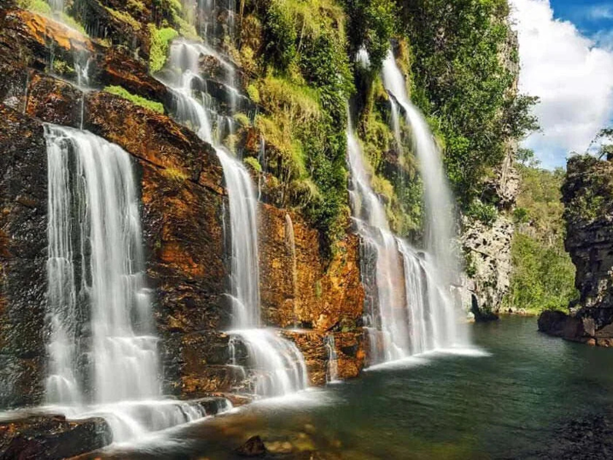

O estado de Goiás, localizado na Região Centro-Oeste do Brasil, destaca-se por sua forte vocação para o agronegócio e pela riqueza de seus recursos naturais. Com uma economia baseada principalmente na produção de grãos, como soja e milho, além da pecuária, Goiás também possui um setor industrial em crescimento. Sua capital, Goiânia, é conhecida pelo planejamento urbano e áreas verdes, enquanto o estado abriga importantes destinos turísticos, como a Chapada dos Veadeiros, famosa por suas paisagens exuberantes, cachoeiras e biodiversidade. Culturalmente, Goiás mantém tradições marcantes, como a música sertaneja e festas populares, refletindo a identidade do interior brasileiro.
